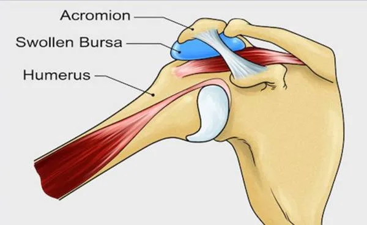
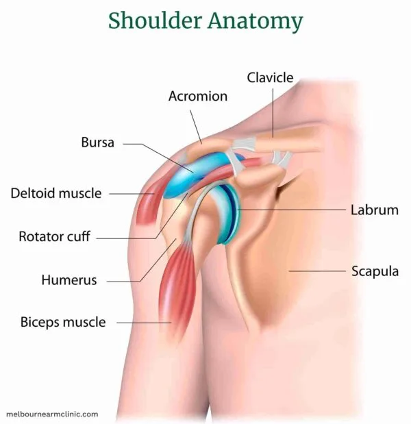
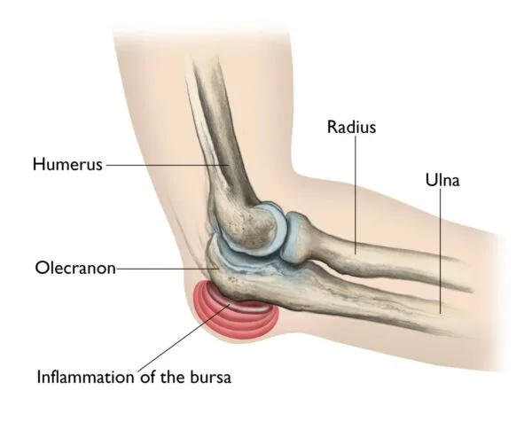
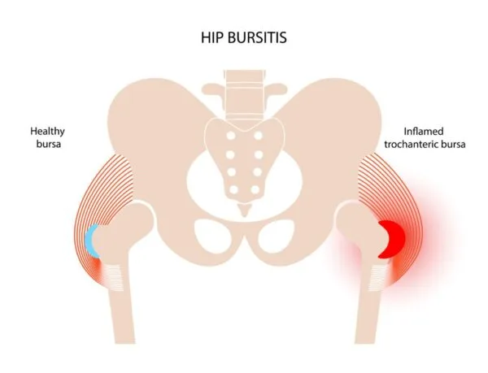
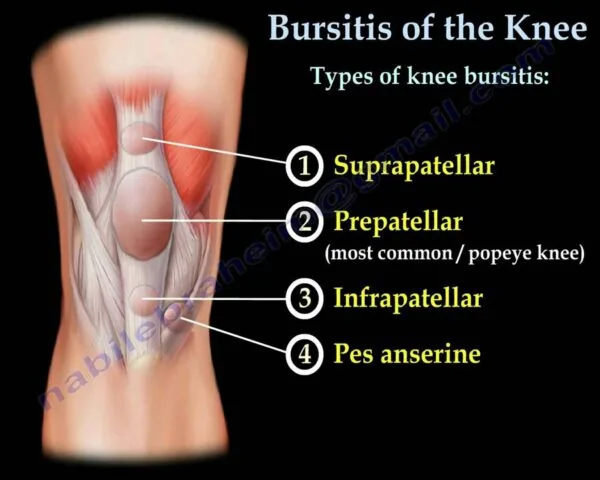
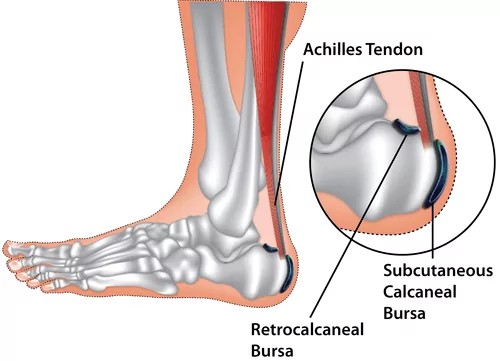

Expanded Nursing Uganda Explanation
Bursitis should be understood beyond a short definition. Link the concept to patient history, focused assessment, common risks, nursing priorities, documentation and evaluation of outcomes.
01 Overview
Bursitis is inflammation of a bursa, a small fluid-filled sac that acts as a cushion between bone and muscle, skin or tendon.
Bursitis can also be defined as a painful medical condition characterized by inflammation of the bursae found in large joints.
A bursa (plural: bursae) is a small, fluid-filled sac lined with a synovial membrane. These sacs are strategically located throughout the body, primarily:
- Between bones and tendons
- Between bones and muscles
- Between bones and skin
There are over 150 bursae in the human body. They cushion and lubricate points between the bones, tendons, and muscles near the joints.
The bursae are lined with synovial cells. Synovial cells produce a lubricant that reduces friction between tissues. This cushioning and lubrication allows our joints to move easily.
The primary function of a bursa is to act as a cushion and lubricant between moving structures. They reduce friction, pressure, and impact between bones, tendons, muscles, and skin, allowing these tissues to glide smoothly over one another during movement. This protective mechanism is vital for efficient and pain-free joint and muscle function.
So, Bursitis simply, is the medical term for the inflammation of a bursa .
When a bursa becomes inflamed, the synovial membrane lining it swells and produces an excess amount of synovial fluid. This leads to:
- Increased fluid volume: The bursa distends and becomes engorged.
- Thickening of the bursa walls: The inflamed tissues become thicker and more rigid.
- Pain and tenderness: The swollen, inflamed bursa exerts pressure on surrounding tissues and nerve endings, leading to pain, especially during movement or palpation.
- Limited range of motion: Pain and swelling can restrict the normal movement of the adjacent joint or limb.
Bursitis results from situations where a bursa is subjected to excessive friction, pressure, trauma, or, less commonly, infection.
Here are the primary causes and risk factors:
Repeated small stresses or continuous friction on a bursa can irritate its lining and lead to inflammation. This is often associated with occupational activities, sports, or hobbies.
- Examples: Shoulder bursitis (subacromial): Repetitive overhead activities like painting, throwing, swimming, or weightlifting.
- Elbow bursitis (olecranon): Leaning on elbows for prolonged periods ("student's elbow").
- Knee bursitis (prepatellar): Prolonged kneeling ("housemaid's knee," "carpenter's knee").
- Hip bursitis (trochanteric): Running, cycling, or prolonged standing, especially with poor biomechanics.
A direct blow, fall, or acute injury to a bursa can cause it to become inflamed or bleed into the bursa, leading to irritation and swelling.
- Examples: Falling directly onto the hip, elbow, or knee.
Sustained pressure on a bursa can restrict blood flow and irritate the tissues, leading to inflammation.
- Examples: Sitting on hard surfaces for extended periods (ischial bursitis), or the previously mentioned leaning on elbows or kneeling.
Bacteria can enter a bursa through a cut, scrape, insect bite, or puncture wound in the overlying skin, or occasionally via bloodstream dissemination from another infection site.
- Characteristics: Septic bursitis is often accompanied by significant pain, redness, warmth, fever, and sometimes pus formation within the bursa. It requires prompt medical attention and antibiotics.
- Common Sites: More common in superficial bursae like the olecranon (elbow) and prepatellar (knee) bursae, as they are more exposed to external trauma.
Certain autoimmune or inflammatory diseases can cause systemic inflammation that secondarily affects bursae.
- Examples: Rheumatoid Arthritis: A chronic inflammatory disorder affecting joints and sometimes other organs.
- Gout: As we just discussed, deposition of uric acid crystals can cause inflammation in joints and sometimes bursae.
- Pseudogout (Calcium Pyrophosphate Deposition Disease - CPPD): Deposition of calcium pyrophosphate crystals.
- Ankylosing Spondylitis: A chronic inflammatory disease primarily affecting the spine.
Incorrect posture, gait abnormalities, leg length discrepancies, or muscular imbalances can place abnormal stress on certain bursae over time.
- Examples: Ill-fitting shoes, improper athletic technique, or scoliosis can contribute to hip or knee bursitis.
The risk of bursitis increases with age, as tendons and bursae can become less elastic and more susceptible to injury.
- Diabetes: Individuals with diabetes may have an increased risk of developing certain types of bursitis, including septic bursitis, due to impaired immune function and circulation.
- Thyroid Disease: Some thyroid disorders can contribute to musculoskeletal issues, including bursitis.
The pathophysiology of bursitis involves a series of events that occur within the bursa in response to an irritant or injury.
- Structure: A bursa is a thin-walled sac, lined by a synovial membrane, containing a small amount of viscous synovial fluid.
- Role: Its primary role is to reduce friction and cushion between bones, tendons, muscles, and skin during movement. The synovial fluid acts as a lubricant.
The inflammatory process typically begins when the bursa is subjected to:
- Mechanical Stress/Friction: Repetitive motion, overuse, or prolonged pressure causes micro-trauma to the synovial lining cells within the bursa.
- Direct Trauma: An acute blow or fall can directly injure the bursa, causing hemorrhage (bleeding) and tissue damage.
- Infection (Septic Bursitis): Bacteria (most commonly Staphylococcus aureus or Streptococcus species) enter the bursa, usually through a break in the skin overlying a superficial bursa.
- Crystal Deposition (e.g., Gout, Pseudogout): Microcrystals (e.g., monosodium urate in gout, calcium pyrophosphate in pseudogout) can precipitate within the bursa, initiating an intense inflammatory reaction.
- Systemic Inflammation: In conditions like rheumatoid arthritis, the immune system mistakenly attacks the synovial lining, leading to inflammation in bursae (similar to joints).
Regardless of the initial trigger, the body's inflammatory response is activated:
- Cellular Response: Synovial Cells: The synovial cells lining the bursa become irritated and hyperactive.
- Immune Cell Infiltration: Inflammatory cells, including neutrophils, macrophages, and lymphocytes, migrate into the bursa.
- Fibroblast Activation: In chronic cases, fibroblasts may become active, leading to thickening of the bursal wall.
- Vascular Changes: Vasodilation: Blood vessels surrounding the bursa dilate, increasing blood flow to the area. This contributes to the redness and warmth often seen with bursitis.
- Increased Vascular Permeability: Blood vessels become "leakier," allowing plasma proteins and fluid to escape into the bursa.
- Fluid Accumulation (Effusion): The increased vascular permeability and active secretion by inflamed synovial cells lead to an excessive accumulation of synovial fluid within the bursa.
- This fluid can be serous (clear, straw-colored), sanguineous (bloody, if due to trauma), or purulent (pus-filled, if septic).
- The increased fluid volume causes the bursa to distend and swell.
- Chemical Mediators: Inflammatory cells release various chemical mediators (e.g., prostaglandins, bradykinin, cytokines like IL-1, TNF-alpha).
- These mediators contribute to vasodilation, increased permeability, and directly stimulate pain receptors (nociceptors).
The pathological changes described above directly lead to the clinical signs and symptoms:
- Pain: Primarily due to the distension of the bursa stretching pain-sensitive nerve endings, and the direct stimulation of nociceptors by inflammatory mediators. Pain is often worse with movement or pressure.
- Swelling: Due to increased fluid volume within the bursa.
- Tenderness: The inflamed bursa is tender to touch.
- Warmth and Redness: Due to increased blood flow (vasodilation), especially prominent in septic bursitis.
- Limited Range of Motion: Pain and swelling can physically restrict joint movement.
- Fever and Malaise: May be present, especially in septic bursitis, indicating a systemic inflammatory response.
If the irritation or inflammation is prolonged and not resolved:
- The bursa wall can thicken and become fibrotic.
- Calcium deposits may form within the bursa.
- Chronic inflammation can lead to persistent pain and recurrent flares, even with less provocation.
- Acute Bursitis: (0months to 3months) During the acute phase of bursitis, local inflammation occurs and the synovial fluid is thickened, and movement becomes painful as a result.
- Chronic Bursitis: (3months and above): leads to continual pain and can cause weakening of overlying ligaments and tendons and, ultimately, rupture of the tendons. Because of the possible adverse effects of chronic bursitis on overlying structures, bursitis and tendinitis may occur together.
- Septic Bursitis: Septic (or infectious) bursitis occurs when infection from either direct inoculation (usually superficial bursa) or hematogenous or direct spread from other sites (deep bursa involvement) causes inflammatory bursitis. Septic bursitis can be acute, subacute, or recurrent/chronic. Fluid may present with , White blood cell count (WBC) greater than 100,000/µL with a predominance of neutrophils, High protein and lactate, Positive culture and Gram stain.
- Aseptic Bursitis: A non-infectious condition caused by inflammation resulting from local soft-tissue trauma or strain injury. Fluid may present with White blood cell count (WBC) range from 2000 to 100,000/µl, Negative culture and Gram stain.
- Location: The subacromial bursa is located in the shoulder, between the deltoid muscle, the acromion (part of the shoulder blade), and the rotator cuff tendons. It facilitates smooth gliding of the rotator cuff under the acromion.
- Causes: Repetitive Overhead Activities: Common in athletes (swimmers, baseball pitchers, tennis players), painters, carpenters, or anyone with occupations requiring frequent arm elevation.
- Direct Trauma: Falling on the shoulder.
- Shoulder Impingement Syndrome: Often occurs alongside or as a component of rotator cuff tendonitis.
- Poor Posture: Can alter shoulder biomechanics.
- Signs and Symptoms: Pain: Gradual onset of pain in the outer aspect or front of the shoulder, often radiating down the arm (but usually not past the elbow).
- Worse with Overhead Activities: Pain is exacerbated by lifting the arm above shoulder height, reaching behind the back, or sleeping on the affected side.
- Painful Arc: Pain may be most pronounced in the mid-range of arm abduction (lifting the arm out to the side), often between 60° and 120°.
- Tenderness: Localized tenderness to palpation just below the acromion.
- Weakness/Limited Range of Motion: Due to pain, rather than true muscular weakness.
- Stiffness: Especially after periods of inactivity.
- Location: The olecranon bursa is a superficial bursa located at the tip of the elbow (the olecranon process of the ulna), between the bone and the skin.
- Causes: Prolonged Pressure: Leaning on the elbows for extended periods ("student's elbow" or "baker's elbow").
- Direct Trauma: A fall or blow to the point of the elbow.
- Infection (Septic Bursitis): Due to its superficial location, it's particularly prone to infection through skin breaks (cuts, scrapes, insect bites).
- Systemic Conditions: Gout, rheumatoid arthritis.
- Signs and Symptoms: Swelling: Most prominent symptom, appearing as a soft, golf ball-sized lump at the tip of the elbow. This swelling can sometimes be quite large and disfiguring.
- Pain: Often dull and aching, but can be sharp if infected or inflamed severely. Pain is worse with direct pressure or bending the elbow acutely.
- Redness and Warmth: Especially indicative of infection or severe inflammation.
- Tenderness: To touch over the bursa.
- Limited Range of Motion: Usually minimal unless the swelling is very large or infected.
- Fever/Malaise: May be present with septic bursitis.
- Location: The trochanteric bursa is located on the outer side of the hip, overlying the greater trochanter (the bony prominence on the side of the thigh bone, femur). It cushions the iliotibial (IT) band as it passes over the greater trochanter.
- Causes: Repetitive Motion: Common in runners, cyclists, and those who stand for prolonged periods.
- Direct Trauma: Falling onto the side of the hip.
- Leg Length Discrepancy: Can alter gait mechanics.
- Muscle Weakness/Imbalance: Weak hip abductor muscles.
- Poor Posture or Gait: Resulting in abnormal stress on the hip.
- Spinal Problems: Low back pain or scoliosis.
- Signs and Symptoms: Pain: Gradual onset of pain on the outer side of the hip, often radiating down the outside of the thigh towards the knee.
- Worse with Activity: Pain is exacerbated by walking, running, climbing stairs, standing up from a seated position, and prolonged standing.
- Night Pain: Pain often worsens when lying on the affected side, disturbing sleep.
- Tenderness: Intense tenderness to palpation directly over the greater trochanter.
- Stiffness: Especially after periods of rest.
- Location: The prepatellar bursa is located at the front of the knee, between the kneecap (patella) and the skin.
- Causes: Prolonged Kneeling: Common in occupations requiring frequent or prolonged kneeling ("housemaid's knee," "carpenter's knee," "wrestler's knee").
- Direct Trauma: A fall or blow to the front of the knee.
- Infection (Septic Bursitis): Like the olecranon bursa, its superficial location makes it susceptible to infection through skin breaks.
- Systemic Conditions: Gout, rheumatoid arthritis.
- Signs and Symptoms: Swelling: A prominent, soft swelling over the front of the kneecap.
- Pain: Variable, often dull and aching, but can be severe with direct pressure, kneeling, or flexing the knee.
- Redness and Warmth: Especially if infected or acutely inflamed.
- Tenderness: To touch over the bursa.
- Limited Range of Motion: Typically limited only in extreme flexion due to mechanical obstruction from swelling, or if severely painful.
- Fever/Malaise: Possible with septic bursitis.
- Location: The retrocalcaneal bursa is located at the back of the heel, between the Achilles tendon and the heel bone (calcaneus).
- Causes: Repetitive Friction/Overuse: Often associated with activities that repeatedly stress the Achilles tendon (e.g., running, jumping).
- Ill-fitting Footwear: Shoes that rub or press excessively against the back of the heel.
- Haglund's Deformity: A bony enlargement on the back of the heel bone that can irritate the bursa.
- Tight Achilles Tendon: Can increase pressure on the bursa.
- Systemic Conditions: Gout, rheumatoid arthritis.
- Signs and Symptoms: Pain: At the back of the heel, just above where the Achilles tendon attaches to the bone.
- Worse with Activity: Pain increases with walking, running, or standing on tiptoes.
- Pain with Footwear: Shoes, especially those with rigid backs, can aggravate the pain.
- Tenderness: Localized tenderness when pressing on the area between the Achilles tendon and the heel bone.
- Swelling: May be present as a soft lump at the back of the heel, sometimes visible on either side of the Achilles tendon.
- Redness and Warmth: Possible with acute inflammation.
The diagnosis of bursitis is primarily clinical, based on a thorough medical history and physical examination. Imaging and laboratory tests are often used to confirm the diagnosis, rule out other conditions, and identify potential causes like infection or crystal deposition.
A detailed history is crucial for identifying the likely cause and type of bursitis. The healthcare provider will inquire about:
- Pain Characteristics: Onset (sudden or gradual), location, quality (sharp, aching), severity (using a scale), aggravating and alleviating factors (e.g., specific movements, positions, rest).
- Recent Trauma or Injury: Direct blows, falls, or repetitive activities.
- Occupational and Recreational Activities: Hobbies, sports, or work that involve repetitive movements or prolonged pressure on specific areas (e.g., kneeling, leaning).
- Associated Symptoms: Redness, warmth, swelling, fever, chills (suggestive of infection).
- Medical History: Past medical conditions (e.g., diabetes, rheumatoid arthritis, gout), medications, and previous episodes of bursitis.
- Effect on Daily Activities: How the pain and swelling impact the patient's functional abilities.
The physical examination focuses on the affected area and includes:
- Inspection: Swelling: Presence, size, and location of any visible swelling.
- Redness (Erythema): A sign of inflammation or infection.
- Warmth: Increased skin temperature over the bursa.
- Skin Integrity: Look for cuts, abrasions, puncture wounds, or insect bites, especially for superficial bursae (e.g., olecranon, prepatellar).
- Deformity: Any visible changes in joint or limb alignment.
- Palpation: Tenderness: Applying gentle pressure directly over the bursa will typically elicit localized pain. This is a key diagnostic sign.
- Fluctuance: The bursa may feel boggy or fluid-filled on palpation.
- Temperature: Confirm warmth.
- Crepitus: Rarely, a crackling sensation might be felt.
- Range of Motion (ROM) Assessment: Active ROM: Assess the patient's ability to move the affected joint through its full range. Pain often limits active ROM.
- Passive ROM: The examiner moves the joint. If passive ROM is relatively normal or less painful than active ROM, it suggests a soft tissue (bursal, tendinous) issue rather than an intra-articular (joint) problem. Pain at the extremes of passive motion may still be present.
- Specific Tests: For example, in subacromial bursitis, a painful arc during abduction is characteristic. In trochanteric bursitis, pain with resisted hip abduction or external rotation may be present.
- Neurovascular Assessment: Check for sensation, motor strength, and pulses distal to the affected area to rule out nerve compression or vascular compromise, though this is less common with bursitis.
These are generally used to: * Confirm the diagnosis. * Rule out other conditions (e.g., fracture, arthritis, tendon tear). * Identify infection or crystal deposition.
- X-rays: Purpose: Primarily to rule out underlying bone abnormalities such as fractures, arthritis (osteoarthritis), bone spurs, or tumors. X-rays themselves do not show bursitis directly unless chronic inflammation has led to calcification within the bursa (rarely).
- Findings: Usually normal in acute bursitis. May show bony abnormalities contributing to impingement (e.g., acromial spur in subacromial bursitis) or signs of systemic arthritis.
- Ultrasound (US): Purpose: An excellent, non-invasive, and relatively inexpensive tool. It can directly visualize the bursa.
- Findings: Will show bursal distension with fluid , thickened bursal walls, and sometimes signs of inflammation. It can help differentiate bursitis from tendonitis or effusions within a joint. It's also useful for guiding aspirations.
- Magnetic Resonance Imaging (MRI): Purpose: Provides highly detailed images of soft tissues (muscles, tendons, ligaments, bursae, cartilage).
- Findings: Clearly demonstrates bursal inflammation, fluid accumulation , and can effectively rule out other pathologies like rotator cuff tears, labral tears, or stress fractures, which can mimic bursitis symptoms. Often used when the diagnosis is unclear or if other pathologies are suspected.
- Bursal Fluid Aspiration (Arthrocentesis): Purpose: This is the most crucial diagnostic test when infection (septic bursitis) or crystal-induced bursitis (gout, pseudogout) is suspected. A needle is used to withdraw fluid from the bursa.
- Laboratory Analysis of Fluid: Cell Count and Differential: Elevated white blood cell (WBC) count, especially polymorphonuclear leukocytes (PMNs), strongly suggests infection.
- Gram Stain and Culture: Identifies the causative bacteria and guides antibiotic selection.
- Crystal Analysis: Microscopic examination (using polarized light) for the presence of uric acid crystals (gout) or calcium pyrophosphate crystals (pseudogout).
- Glucose and Protein: May also be assessed.
- Blood Tests: Complete Blood Count (CBC): Elevated WBC count suggests infection (e.g., septic bursitis).
- Erythrocyte Sedimentation Rate (ESR) and C-Reactive Protein (CRP): Non-specific markers of inflammation, often elevated in inflammatory or septic bursitis.
- Uric Acid Levels: May be checked if gout is suspected (though normal uric acid does not rule out acute gout).
- Rheumatoid Factor (RF) / Anti-CCP Antibodies: If rheumatoid arthritis is suspected.
It's important to differentiate bursitis from other conditions that can cause similar symptoms, such as:
- Tendonitis
- Arthritis (osteoarthritis, rheumatoid arthritis)
- Ligament sprains
- Fractures
- Cellulitis (skin infection)
- Nerve entrapment syndromes
The management of bursitis encompasses a multi-faceted approach aimed at reducing pain and inflammation, treating the underlying cause, and preventing complications and recurrence.
- To reduce the inflammation and pain.
- To identify and treat the cause.
- To prevent complications.
Nursing care is crucial for patient support, symptom relief, education, and complication prevention. Most patients with bursitis are treated conservatively to reduce inflammation. This conservative treatment is often guided by the PRICEMM acronym:
- P rotect: Use padding, braces, or make changes in technique to shield the affected bursa from further irritation.
- R est: Avoid activities that exacerbate pain and inflammation to allow the bursa to heal.
- I ce: Apply cryotherapy (cold treatments) for 20 minutes every several hours, particularly in the first 24-48 hours, to relieve pain and decrease acute inflammation. These may be followed by heat treatments once the acute inflammation subsides.
- C ompression: Elastic dressings can help ease pain and reduce swelling, as seen in cases like olecranon bursitis, but ensure they are not applied too tightly.
- E levation: Raise the affected limb above the level of the heart, especially useful in lower-limb bursitis, to help reduce swelling.
- M odalities: Employ physical therapy modalities such as electrical stimulation, ultrasonography, or phonophoresis to aid in pain relief and tissue healing.
- M edications: Administer prescribed nonsteroidal anti-inflammatory drugs (NSAIDs), acetaminophen, or assist with corticosteroid injections. Nurses also prepare for and assist with bursal aspiration and intra-bursal steroid injections (with or without local anesthetic agents).
- Patient Education: Educate patients about the importance of regular periods of rest and possible alternative activities, especially for bursitis secondary to overuse, to prevent recurrence. Provide specific guidance on proper body mechanics, posture, and the use of site-specific therapy (e.g., cushions for ischial bursitis, well-fitting padded shoes for calcaneal bursitis).
- Pain Assessment: Regularly assess pain levels and effectiveness of interventions.
- Monitoring for Infection: For suspected septic bursitis, monitor closely for systemic symptoms (fever, malaise) and local signs (increasing redness, warmth, pus). Ensure prompt administration of antibiotics as prescribed.
- Skin Integrity: Maintain skin integrity over superficial bursae and educate patients on signs of infection to report.
Medical management for bursitis depends on the involved bursa and whether the condition is aseptic (non-infectious) or septic (infectious).
- Systemic Antibiotics: Patients with suspected septic bursitis should be treated with antibiotics while awaiting culture results.
- Antimicrobial Regimens: Staphylococcus aureus , methicillin-susceptible (MSSA): Oxacillin 2g IV q.i.d.
- Dicloxacillin 500 mg PO q.i.d.
- Staphylococcus aureus , methicillin-resistant (MRSA): Vancomycin 1g IV b.d.
- Treatment Course: Staphylococcus aureus bursitis often resolves with antibiotics alone. Sporothrix schenckii bursitis, however, often requires bursectomy in addition to antifungal treatment.
- Admission Criteria: Superficial septic bursitis can often be treated with oral outpatient therapy. However, those with systemic symptoms (e.g., fever, chills) or who are immunocompromised may require admission for intravenous (IV) antibiotic therapy.
- Aspiration: Diagnostic aspiration is crucial for identifying the causative organism and guiding antibiotic selection.
- Drainage: If antibiotics are insufficient, repeated aspiration or surgical incision and drainage may be necessary.
Aseptic bursitis is usually managed with conservative measures, primarily the PRICEMM regimen outlined above.
- Nonsteroidal Anti-inflammatory Drugs (NSAIDs): Oral NSAIDs are often a first choice for pain relief and reduction of inflammation.
- Local Corticosteroid Injections: May be used in some patients who do not respond adequately to initial conservative therapy, providing significant anti-inflammatory effects directly to the bursa.
- Conservative Measures: Recommended for all patients.
- Physical Therapy (PT): Focus on scapular strengthening and postural re-education, along with general shoulder exercises to improve mechanics and reduce impingement.
- Nonsteroidal Anti-inflammatory Medications (NSAIDs): Used for pain and inflammation control.
- Corticosteroid Injections: Can be effective for refractory cases.
- Conservative Measures: Recommended for all patients.
- Nonsteroidal Anti-inflammatory Medications (NSAIDs): Often used as a first choice.
- Reduce Physical Activity: Avoid activities that place pressure on the knee.
- PRICEMM Regimen: Especially in the first 72 hours after injury.
- Physical Therapy: To maintain knee function and strengthen surrounding muscles.
- Local Corticosteroid Injections: May be used in some patients who do not respond to initial therapy.
- Conservative Measures: Recommended for all patients.
- PRICEMM Regimen: Especially in the first 72 hours after injury.
- Avoidance of Aggravating Physical Activity: Prevent pressure on the elbow.
- Most patients improve significantly with these measures, so physical and occupational therapy are not usually necessary unless there are underlying musculoskeletal issues.
- Early Aspiration: With or without corticosteroid injection, may be helpful for bothersome fluid collections.
- Diagnostic Aspiration: Should be performed among patients who do not respond to treatment to rule out possible infection.
02 Nursing Uganda Clinical Lens
Use Bursitis as a practical nursing topic, not only a memorized definition. Connect structure, movement, pain, circulation, nerve function and safe mobility.
- What to understand first: define bursitis, identify the normal or expected pattern, then explain what changes when the patient is unwell.
- Why it matters in care: the nurse must recognize risk early, explain findings clearly, document accurately and know when to escalate.
- How to revise it: connect each point to assessment, nursing diagnosis or care problem, intervention, rationale and evaluation.
03 Assessment Guide
- Pain score, site, onset, deformity, swelling, bruising and ability to move.
- Distal pulse, capillary refill, colour, warmth, sensation and movement.
- Skin integrity, wounds, cast tightness, traction alignment and pressure areas.
04 Nursing Priorities, Rationales and Outcomes
- Immobilize and protect the affected part while preventing further injury.
- Control pain and swelling while monitoring neurovascular status.
- Prevent complications such as compartment syndrome, infection, pressure injury and venous stasis.
The rationale for these priorities is patient safety: nursing actions should prevent deterioration, reduce discomfort, support recovery and create clear evidence for the next caregiver.
- Expected outcome: Pain is reduced, circulation and sensation remain intact, swelling is controlled and the patient mobilizes safely within the care plan.
05 Patient Teaching and Revision Check
- Explain bursitis in simple language the patient or caregiver can repeat back.
- Teach warning signs, medicine or follow-up instructions, hygiene or lifestyle points where relevant.
- For exams, prepare a short answer using: definition, causes or risk factors, signs, assessment, management, complications and prevention.
- For ward practice, document baseline findings, actions taken, patient response and the plan for review.
Illustrations and Diagrams (6)






Related Video Lectures
Watch nursing lecture videos on YouTube for this topic. Opens in a new tab.
Watch on YouTubeExternal link: YouTube may use its own cookies and terms. Nursing Uganda is not affiliated with YouTube.